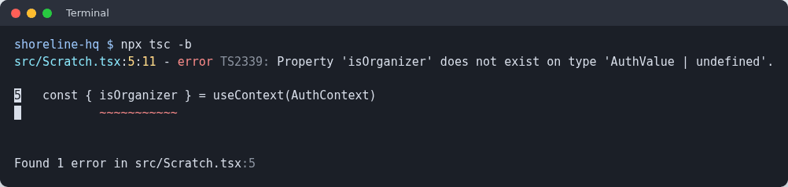
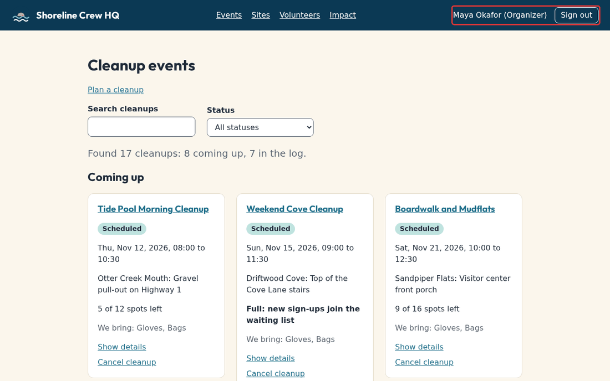

🔑 Lesson 5.2: Typed Context
Until today, everyone who opens Shoreline Crew HQ sees the same thing. That is about to change: organizers sign in, and the app starts to know who is looking. The header greets Maya by name, the events page shows her the two drafts nobody else may see, and the check-in desk on today's cleanup loads the real roster from shoreline-api. Dozens of components, at every depth of the tree, need to ask the same question: "who is signed in?" Passing the answer down as a prop through every layer would be painful. React's answer is context, and TypeScript's job today is to make sure no component can ever read it the wrong way.
🎯 Learning Objectives
By the end of this lesson, you will be able to:
- Explain prop drilling, and decide when a value belongs in context and when a plain prop is clearer
- Create a typed context with
createContext, provide it with React 19's<Context value>, and read it withuseContext - Avoid the "undefined context" trap: type the context as
T | undefinedand write auseAuth()Hook that fails loudly outside its provider and never returnsundefined - Sign in against a real API with roles, keep the session in
sessionStorage, and send the token with every request - Make data depend on who is asking: drafts, organizer-only buttons and a live roster that load again when someone signs in or out
📦 Code for this lesson
Starting code: lesson-18-start.zip · Finished code: lesson-18-end.zip. Each folder has a README with the commands to run it. Copy .env.example to .env.local in shoreline-hq before npm run dev.
In This Lesson
🪢 The Prop Drilling Problem
Here is a real question from today's project. On the events page, every scheduled cleanup has a Cancel cleanup button. Only organizers should see it. The component that draws the button is EventCard, and it sits three levels below the page:
With props alone, the answer has to be carried down by hand: EventsPage passes isOrganizer to EventGroups, which passes it to EventList, which passes it to each EventCard. Two of those three components never use the value; they only hand it on. That is prop drilling. It works, but every middle component grows a prop it does not care about, and when the value changes shape, all of them change too. And the header's UserMenu, in a different branch of the tree, needs the same answer through a completely different chain.
💡 Mental model: the beach radio
Passing a message along a line of volunteers works for two or three people. For the whole beach, the crew lead uses the radio: one broadcast on a known channel, and anyone carrying a radio tuned to it hears the message, wherever they stand. Nobody in between has to repeat it. A context is that channel. The provider is the transmitter, and it only reaches the part of the tree inside it. Each component that calls useContext is a radio tuned to the channel, and it hears the nearest transmitter above it.
Context is not a reason to stop using props. Props are explicit: you can read a component's interface and see everything it needs. Use context for values that many components at different depths need, and that change rarely. The usual list:
| Good fit for context | Better as props or elsewhere |
|---|---|
| Who is signed in, and their role (today's project) | Data for one component and its child: a prop (today, EventGroups gets showDrafts as a prop) |
| Theme, language, units chosen by the person | Server data such as events and rosters: useApi now, TanStack Query in Lesson 7.1 |
A reducer's dispatch shared by a deep tree | Values that change many times a second (every keystroke of a search): local state |
💡 Why this matters
Almost every real React app has an "auth context": routers, data libraries and design systems all ship their own contexts too, and useAuth()-style Hooks are what you will call on your first day on a team. Knowing how they are built, and typed, means you can read those libraries' code, debug "it says I am signed out" bugs, and write your own when an app needs one.
📡 Context in Three Parts
Every context has three parts: create it once, provide a value high in the tree, and read it anywhere below. Try them on something small before sign-in. The crew weighs its bags; some volunteers think in kilograms, visitors from the US in pounds. Create src/Scratch.tsx (this lesson's experiment file) and show it by temporarily making return <UnitsDemo /> the first line of CurrentPage in App.tsx:
import { createContext, useContext, useState } from 'react'
type WeightUnit = 'kg' | 'lb'
// The default ('kg') is what components get when no provider is above them
const WeightUnitContext = createContext<WeightUnit>('kg')
function BagWeight({ kg }: { kg: number }) {
const unit = useContext(WeightUnitContext)
return <strong>{unit === 'kg' ? `${kg} kg` : `${Math.round(kg * 2.2)} lb`}</strong>
}
// Knows nothing about units: no prop passes through it
function DayTotal() {
return <p>Collected today: <BagWeight kg={42} /></p>
}
export function UnitsDemo() {
const [unit, setUnit] = useState<WeightUnit>('kg')
return (
<>
<WeightUnitContext value={unit}>
<button type="button" onClick={() => setUnit(unit === 'kg' ? 'lb' : 'kg')}>
Show {unit === 'kg' ? 'pounds' : 'kilograms'}
</button>
<DayTotal />
</WeightUnitContext>
<DayTotal />
</>
)
}- Create:
createContext<WeightUnit>('kg')makes a context object. The type argument says what the channel carries; the argument is the default value, used by any component that has no provider above it. - Provide:
<WeightUnitContext value={unit}>wraps part of the tree. In React 19 the context object itself is the provider component, and TypeScript checks thatvalueis aWeightUnit. - Read:
useContext(WeightUnitContext)returns the value of the nearest provider above the component. Its type isWeightUnit, inferred from the context.DayTotalhas no props at all: the unit skips it, like the radio skips the people in between.
Measured on the dev server: at first both lines said "Collected today: 42 kg". After one click on Show pounds, the line inside the provider said "Collected today: 92 lb" and the button said "Show kilograms", while the second <DayTotal />, outside the provider, still said "42 kg": with no transmitter above it, it hears the default. When a provider's value changes, React renders every component that reads that context again, wherever it is. That is how one sign-in will update the header, the event cards and the desk at once.
🧩 Version note: .Provider and use(Context)
Code written before React 19 provides a context with .Provider. It still compiles and works in React 19.3 (measured: npx tsc -b and npm run lint were clean), so you will meet it in older projects:
export function OldStyle() {
return (
<WeightUnitContext.Provider value="lb">
<p>Same context, older spelling.</p>
</WeightUnitContext.Provider>
)
}New code writes <WeightUnitContext value="lb">. React 19 also reads a context with use(SomeContext), the same use that unwrapped promises in Lesson 4.4. Unlike useContext, it may be called inside an if. The HQ sticks with useContext, which reads the same everywhere.
🕳️ The Undefined Context Trap
Units have a sensible default: kilograms. Sign-in does not. What should useContext return for "who is signed in" when nobody remembered to put a provider above the component? Many tutorials paper over the question with a harmless-looking default object:
import { createContext, useContext } from 'react'
import type { AuthValue } from './auth/AuthContext.ts'
// A "harmless" default so that nobody has to deal with undefined...
const QuietAuthContext = createContext<AuthValue>({
session: null,
isOrganizer: false,
signIn: async () => {},
signOut: () => {},
})
// ...used by a component that nobody wrapped in a provider
export function QuickSignIn() {
const { session, signIn } = useContext(QuietAuthContext)
return (
<button
type="button"
onClick={() => signIn({ email: 'maya.okafor@example.com', password: 'shoreline-demo' })}
>
{session === null ? 'Sign in as Maya' : `Signed in as ${session.user.name}`}
</button>
)
}It type-checks and lints cleanly. Then, measured on the dev server with QuickSignIn rendered outside any provider: clicking Sign in as Maya did nothing at all. The button kept its text, no request reached the API, and the console showed no error. The default's signIn is an empty function, so the app is "signed out forever", and nothing tells you why. That is the trap: a fake default turns a setup mistake into a silent bug.
Make "no provider" a type the compiler sees
The HQ's context says the truth instead: outside a provider there is no value. Its type is AuthValue | undefined, and the default is undefined:
// undefined is the value outside an AuthProvider: a mistake that useAuth() reports at once
export const AuthContext = createContext<AuthValue | undefined>(undefined)Now TypeScript refuses any component that reads it without checking. Try it in src/Scratch.tsx once the project's Step 2 is done:
import { useContext } from 'react'
import { AuthContext } from './auth/AuthContext.ts'
export function OrganizerNote() {
const { isOrganizer } = useContext(AuthContext)
return isOrganizer ? <p>Drafts are listed below.</p> : null
}
undefined outside a provider, and refuses to take isOrganizer out of it.Expected output (npx tsc -b)
src/Scratch.tsx:5:11 - error TS2339: Property 'isOrganizer' does not exist on type 'AuthValue | undefined'.
5 const { isOrganizer } = useContext(AuthContext)
~~~~~~~~~~~
Found 1 error in src/Scratch.tsx:5The message is precise: "does not exist on type AuthValue | undefined" means "this might be undefined, and undefined has no isOrganizer". You could write useContext(AuthContext)?.isOrganizer in every component, but then every component decides on its own what "no provider" means. Instead, check once, in a custom Hook:
/** The sign-in state. Only works inside <AuthProvider>. */
export function useAuth(): AuthValue {
const auth = useContext(AuthContext)
if (auth === undefined) {
throw new Error('useAuth() must be used inside <AuthProvider>')
}
return auth
}useAuth()is a custom Hook (Lesson 4.2): its name starts withuseand it callsuseContext.- The
ifnarrows. After it,authisAuthValue, so the declared return typeAuthValueholds and every caller gets a value with noundefinedin it. - A missing provider is now a loud error with a message that says exactly what to fix. Measured with the provider removed from
App.tsx(Common Mistakes): the page went blank and the console showed "useAuth() must be used inside <AuthProvider>".
✅ The pattern, in one sentence
Type the context as Value | undefined with undefined as the default, never export a way to read it without the check, and give callers one Hook that throws outside the provider and returns Value. Errors that point at the cause are a gift: this one turns an afternoon of "why am I always signed out?" into one line in the console.
🗄️ Where a Sign-in Lives
Signing in to shoreline-api is one request: POST /api/auth/sign-in with an email and password. The answer is a SignInResponse from the API's types: a token (an opaque string such as st_…) and the user (id, name, email and role, 'organizer' | 'volunteer'). Every later request proves who is asking by sending the token in a header: Authorization: Bearer st_…. The API keeps its sessions in memory, so a restarted API has forgotten every token.
The app has to remember that answer somewhere. Until Lesson 6.1, every header link reloads the whole page, so a session kept only in React state would be lost on every click. The choices:
| Where | Survives a reload | Shared with other tabs | Readable by the page's JavaScript |
|---|---|---|---|
| React state only (memory) | No | No | Yes |
sessionStorage (the HQ's choice) | Yes | No: each tab has its own, gone when the tab closes | Yes |
localStorage | Yes | Yes, and kept for weeks | Yes |
An HttpOnly cookie set by the server | Yes | Yes | No |
The HQ keeps the session in sessionStorage under the key shoreline-hq-session: it survives the reloads this app still has, and it ends when the organizer closes the tab, which suits a shared laptop at a sign-in table. Measured in the project: after signing in, a reload kept Maya signed in, and a second tab opened on the same app showed Sign in.
🛑 What the token is, and what it is not
- Anything a page's JavaScript can read, a malicious script on that page could read too. That includes React state and both storages. The defense is not hiding the token better; it is not letting foreign scripts run (React escapes text you render, and Lesson 10.2's host settings help). Teams that control their own server often prefer an
HttpOnlycookie, which scripts cannot read at all. shoreline-api uses bearer tokens because the React Native course's phone app needs them too. - Never put a token in code, in a URL, or in a log. URLs end up in browser history and server logs. The HQ never prints the token anywhere, and neither does this page.
- Hiding a button is not security. Today the HQ hides drafts and the Cancel button from volunteers, but the API is what enforces the rules. Measured: with a volunteer's token,
GET /api/events/e17/signupsanswered 403 with "Only organizers can do that." The front end only decides what is convenient to show.
Data from storage is outside data, so the HQ treats it like an API answer (Lesson 2.4): readSession() parses it as unknown and checks it with a type guard before trusting it. A session someone edited by hand in DevTools, or one saved by an older version of the app, becomes null instead of a crash.
🙋 Who Asks Is Part of the Question
Here is the part that is easy to miss. GET /api/events answers 15 cleanups to a guest and 17 to an organizer, because drafts are only for organizers. The same URL, a different answer, depending on the token. So the signed-in person is part of what a request means, and anything that remembers answers has to remember them per person:
useApiloads again when itskeychanges (Lesson 4.2). Today it also reads the context and adds the person to its dependencies:[key, viewer, attempt]. Measured: when Maya signed out on the events page, the page asked for/events?perPage=50and/sitesagain, without a token, and the drafts disappeared with no reload.eventPromises.tscaches one promise per cleanup (Lesson 4.4). A guest's cached 404 for a draft must not be served to the organizer who signs in next, so the cache key becomes viewer plus id. Measured: on the Harbor Kayak Cleanup page (a draft), signing out turned the page into "Cleanup not found" on the spot.
You will meet the same idea in Lesson 7.1, where TanStack Query's cache keys play the role of useApi's key.
A word on how often things render. When the session changes, every component that calls useAuth() renders again, and so does every component useApi runs in. Sign-in and sign-out happen a few times a day, so that is fine. A context whose value changes on every keystroke would be a different story: Lesson 5.3 measures what context changes cost and when it is worth caring.
⚠️ Common Mistakes
⚠️ Forgetting the provider
Remove <AuthProvider> from App.tsx and everything still compiles: TypeScript cannot see which components end up inside which provider at run time. Measured on the dev server: the page was blank (the #root element was empty), and the console's error was the one useAuth() throws: "useAuth() must be used inside <AuthProvider>". UserMenu in the header threw while rendering, and the header sits outside the app's error boundary, so React removed the whole app (Lesson 4.4). A blank page plus that message means one thing: put the provider back around everything that reads the context.
⚠️ The context, the Hook and the provider in one .tsx file
Putting all three in AuthProvider.tsx feels tidy, and it type-checks. The linter disagrees:
Expected output (npm run lint)
> shoreline-hq@0.0.0 lint
> oxlint
⚠ react(only-export-components): Fast refresh only works when a file only exports components. Use a new file to share constants or functions between components.
╭─[src/auth/AuthProvider.tsx:20:17]
19 │ /** The sign-in state. Only works inside <AuthProvider>. */
20 │ export function useAuth(): AuthValue {
· ───────
21 │ const auth = useContext(AuthContext)
╰────
⚠ react(only-export-components): Fast refresh only works when a file only exports components. Move your React context(s) to a separate file.
╭─[src/auth/AuthProvider.tsx:17:14]
16 │ // undefined is the value outside an AuthProvider: a mistake that useAuth() reports at once
17 │ export const AuthContext = createContext<AuthValue | undefined>(undefined)
· ───────────
18 │
╰────
Found 2 warnings and 0 errors.
Finished in 15ms on 46 files with 150 rules using 20 threads.Vite's Fast Refresh (the dev server's update-in-place after you save) can only keep a component's state if its file exports components and nothing else. That is why the project has AuthContext.ts (the context, the type and useAuth, no JSX) and AuthProvider.tsx (the component).
⚠️ Context for everything
Once context works, it is tempting to put every shared value in one. But a component that reads a context depends on whatever provider happens to be above it, which you cannot see in its props. Keep context for values needed far and wide. In today's project, EventGroups sits directly under EventsPage, so it gets showDrafts as a plain prop; EventCard, three levels down, reads useAuth().
🛠️ Project: Sign-in for the HQ
At the end of this project, organizers sign in at /sign-in with shoreline-api's sample accounts (password shoreline-demo for all of them; Maya Okafor, maya.okafor@example.com, is an organizer, Theo Nakamura, theo.nakamura@example.com, a volunteer). The header shows who is signed in, with a Sign out button. Organizers see drafts, the Plan a cleanup link and the Cancel cleanup buttons; everyone else does not. And the check-in desk on today's cleanup loads the real roster, so src/data/sampleRoster.ts goes away.
Start both servers (node server.ts in shoreline-api, npm run dev in shoreline-hq). Delete src/Scratch.tsx and the line you added to CurrentPage when you are done experimenting.
Step 1: Teach the API client about sessions (16 min)
Everything that talks to shoreline-api lives in src/api/client.ts, so the session and the token header go there too. First the comment and the types it needs from the API's contract:
-// Shoreline Crew HQ's API client (Lessons 2.4 and 4.1).
+// Shoreline Crew HQ's API client (Lessons 2.4, 4.1 and 5.2).
// Data from the API is unknown until a check proves its shape.
import type {
ApiErrorBody,
CleanupEvent,
CleanupEventDetail,
ErrorCode,
EventStatus,
PageInfo,
+ Role,
+ RosterEntry,
+ SignInRequest,
+ SignInResponse,
+ Signup,
+ SignupStatus,
Site,
+ Skill,
Terrain,
+ User,
} from './types.ts'Then three new checks, after isListOf and before isApiErrorBody. They follow Lesson 2.4's recipe: a list of allowed values for each union, then one typeof test per property.
const roles: Role[] = ['organizer', 'volunteer']
function isUser(value: unknown): value is User {
return (
isRecord(value) &&
typeof value.id === 'string' &&
typeof value.name === 'string' &&
typeof value.email === 'string' &&
roles.some((role) => role === value.role)
)
}
function isSignInResponse(value: unknown): value is SignInResponse {
return isRecord(value) && typeof value.token === 'string' && isUser(value.user)
}
const signupStatuses: SignupStatus[] = ['confirmed', 'waitlisted', 'cancelled', 'attended', 'no-show']
const signupTextFields: (keyof Signup)[] = ['id', 'eventId', 'volunteerId', 'note', 'createdAt']
const skills: Skill[] = [
'first-aid', 'boat-handling', 'heavy-lifting', 'photography', 'data-recording', 'team-lead',
]
/** One row of GET /api/events/:id/signups: a sign-up and the volunteer's contact details */
function isRosterEntry(value: unknown): value is RosterEntry {
return (
isRecord(value) &&
signupTextFields.every((key) => typeof value[key] === 'string') &&
signupStatuses.some((status) => status === value.status) &&
(value.checkedInAt === null || typeof value.checkedInAt === 'string') &&
isRecord(value.volunteer) &&
typeof value.volunteer.id === 'string' &&
typeof value.volunteer.name === 'string' &&
typeof value.volunteer.email === 'string' &&
(value.volunteer.phone === null || typeof value.volunteer.phone === 'string') &&
Array.isArray(value.volunteer.skills) &&
value.volunteer.skills.every((skill) => skills.some((known) => known === skill))
)
}isSignInResponse checks the sign-in answer (and, below, what comes back out of storage). isRosterEntry checks one roster row, including the volunteer's contact details, which the HQ will not show but the type promises. After Array.isArray, TypeScript only knows any[] (Lesson 2.4), so the skills are checked one by one against the list.
A 401 now means something specific to people, so describeError says it in words:
export function describeError(error: unknown): string {
+ if (error instanceof ApiError && error.status === 401) {
+ return 'Your sign-in has ended. Sign out, then sign in again.'
+ }
if (error instanceof ApiError) {Next, a new section for the session, between the errors and "talking to the API":
// ---------------------------------------------------------------- the session
/** A signed-in organizer or volunteer: the API's token, and who it belongs to */
export type Session = SignInResponse
// sessionStorage: kept when the page reloads, gone when the tab closes, never shared with other tabs
const sessionKey = 'shoreline-hq-session'
/** The saved session, or null when nobody is signed in (or what is saved is not a session) */
export function readSession(): Session | null {
const saved = sessionStorage.getItem(sessionKey)
if (saved === null) return null
try {
const value: unknown = JSON.parse(saved)
return isSignInResponse(value) ? value : null
} catch {
return null
}
}
export function saveSession(session: Session | null): void {
if (session === null) {
sessionStorage.removeItem(sessionKey)
} else {
sessionStorage.setItem(sessionKey, JSON.stringify(session))
}
}Sessionis a type alias for the API'sSignInResponse: a name that says what the app uses it for.readSession()never trusts storage:JSON.parsecan throw on garbage, and parsed data isunknownuntilisSignInResponsesays otherwise.catchwithout a variable is fine when you do not need the error.saveSession(null)removes the key, so "signed out" leaves nothing behind.
At the very end of the file, the three new requests:
/** Today's roster for one cleanup (organizers only: it has contact details) */
export function getRoster(eventId: string, signal?: AbortSignal): Promise<RosterEntry[]> {
return getJSON(`/events/${encodeURIComponent(eventId)}/signups`, isListOf(isRosterEntry), signal)
}
/** POST /api/auth/sign-in. A wrong email or password is an ApiError with status 401. */
export async function postSignIn(credentials: SignInRequest): Promise<Session> {
const response = await request('/auth/sign-in', {
method: 'POST',
headers: { 'Content-Type': 'application/json' },
body: JSON.stringify(credentials),
})
const data: unknown = await response.json()
if (!isSignInResponse(data)) {
throw new Error('Unexpected data from POST /api/auth/sign-in')
}
return data
}
/** POST /api/auth/sign-out: the API forgets the token */
export async function postSignOut(): Promise<void> {
await request('/auth/sign-out', { method: 'POST' })
}getRoster reuses getJSON and isListOf exactly like getSites. The two sign-in requests are the first in the HQ that are not a plain GET, so request must accept more than a signal. Change it to take a RequestInit, the type of fetch's own second argument (method, headers, body, signal and more), and to add the token:
-/** GET a path under /api. Throws ApiError when the API answers with an error status. */
-async function request(path: string, signal?: AbortSignal): Promise<Response> {
- const response = await fetch(`${apiBaseUrl()}/api${path}`, { signal })
+/** Send a request to a path under /api, signed in if there is a session. Throws ApiError on an error status. */
+async function request(path: string, init: RequestInit = {}): Promise<Response> {
+ const headers = new Headers(init.headers)
+ const session = readSession()
+ if (session !== null) {
+ headers.set('Authorization', `Bearer ${session.token}`)
+ }
+ const response = await fetch(`${apiBaseUrl()}/api${path}`, { ...init, headers })
if (!response.ok) {new Headers(init.headers) copies whatever headers the caller passed (such as Content-Type), so adding Authorization never loses them. Now let the compiler find the callers you broke, as in Lesson 4.1:
npx tsc -bExpected output
src/api/client.ts:217:40 - error TS2345: Argument of type 'AbortSignal | undefined' is not assignable to parameter of type 'RequestInit | undefined'.
Type 'AbortSignal' has no properties in common with type 'RequestInit'.
217 const response = await request(path, signal)
~~~~~~
src/api/client.ts:246:40 - error TS2345: Argument of type 'AbortSignal | undefined' is not assignable to parameter of type 'RequestInit | undefined'.
Type 'AbortSignal' has no properties in common with type 'RequestInit'.
246 const response = await request(path, signal)
~~~~~~
Found 2 errors in the same file, starting at: src/api/client.ts:217"No properties in common" is TypeScript's check for options objects: every property of RequestInit is optional, but an AbortSignal shares none of them, so it cannot be meant as one. Wrap the signal in an object at both places:
- const response = await request(path, signal)
+ const response = await request(path, { signal })
return response.json()- const response = await request(path, signal)
+ const response = await request(path, { signal })
const items: unknown = await response.json()npx tsc -b is quiet again. Nothing has changed on screen yet: nobody can sign in so far.
Step 2: The context and its provider (10 min)
Create the folder src/auth/ and, in it, AuthContext.ts (a .ts file: it has no JSX):
import { createContext, useContext } from 'react'
import type { Session } from '../api/client.ts'
import type { SignInRequest } from '../api/types.ts'
/** What every component can ask about sign-in, wherever it sits in the tree */
export interface AuthValue {
/** null while nobody is signed in */
session: Session | null
/** true when an organizer is signed in */
isOrganizer: boolean
/** Throws ApiError (401) when the email or password is wrong */
signIn: (credentials: SignInRequest) => Promise<void>
signOut: () => void
}
// undefined is the value outside an AuthProvider: a mistake that useAuth() reports at once
export const AuthContext = createContext<AuthValue | undefined>(undefined)
/** The sign-in state. Only works inside <AuthProvider>. */
export function useAuth(): AuthValue {
const auth = useContext(AuthContext)
if (auth === undefined) {
throw new Error('useAuth() must be used inside <AuthProvider>')
}
return auth
}AuthValue is the contract every component gets: the session (or null), a ready-made isOrganizer so nobody repeats the role check, and the two actions. signIn returns a Promise<void> that rejects with the API's error, so the form can show it. Then src/auth/AuthProvider.tsx:
import { useState, type ReactNode } from 'react'
import { postSignIn, postSignOut, readSession, saveSession, type Session } from '../api/client.ts'
import type { SignInRequest } from '../api/types.ts'
import { AuthContext } from './AuthContext.ts'
interface AuthProviderProps {
children: ReactNode
}
// Owns the session: the only place that changes it, for React and for the saved copy
export function AuthProvider({ children }: AuthProviderProps) {
// Start from the saved session, so a page reload keeps you signed in
const [session, setSession] = useState<Session | null>(readSession)
const isOrganizer = session?.user.role === 'organizer'
async function signIn(credentials: SignInRequest) {
const next = await postSignIn(credentials)
saveSession(next)
setSession(next)
}
function signOut() {
// The request takes the token with it as it starts; then this tab forgets the session
postSignOut().catch((error: unknown) => console.error(error))
saveSession(null)
setSession(null)
}
return <AuthContext value={{ session, isOrganizer, signIn, signOut }}>{children}</AuthContext>
}useState<Session | null>(readSession)passes the function itself, not its result: React calls it once, on the first render, to restore a saved sign-in (the same lazy start you met withuseReducer).- One writer. Only
signInandsignOutchange the session, and each changes both copies together:sessionStorage(for reloads and forrequest) and React state (for rendering). Components never touch storage. - Signing out always works here, whatever the API says.
postSignOut()reads the token as it starts, so the request still carries it even though the next line clears the session. If it fails (the API is down, or already forgot the token), the error is logged and the person is signed out anyway. value={{ session, isOrganizer, signIn, signOut }}builds a new object on every render ofAuthProvider. It only renders when the session changes, so that is fine here; Lesson 5.3 measures when it is not.
Finally, put the provider around the whole app in src/App.tsx:
+import { AuthProvider } from './auth/AuthProvider.tsx'
import { AppLayout } from './components/AppLayout.tsx' export function App() {
return (
- <AppLayout>
- <ErrorBoundary fallback={PageCrashed}>
- <CurrentPage />
- </ErrorBoundary>
- </AppLayout>
+ <AuthProvider>
+ <AppLayout>
+ <ErrorBoundary fallback={PageCrashed}>
+ <CurrentPage />
+ </ErrorBoundary>
+ </AppLayout>
+ </AuthProvider>
)
}The provider sits outside AppLayout because the header needs it, and outside the error boundary so that a crashed page cannot take the sign-in with it. This is a good moment for the undefined trap experiment with src/Scratch.tsx.
Step 3: The sign-in page and the header (18 min)
Create src/pages/SignInPage.tsx. It uses Lesson 3.5's form action pattern, with an async action this time:
import { useActionState, useEffect, useRef } from 'react'
import { ApiError, describeError } from '../api/client.ts'
import type { User } from '../api/types.ts'
import { useAuth } from '../auth/AuthContext.ts'
import buttonStyles from '../components/Button.module.css'
import { FieldError } from '../components/FieldError.tsx'
import formStyles from '../components/Form.module.css'
import { useDocumentTitle } from '../hooks/useDocumentTitle.ts'
import styles from './Page.module.css'
// What the form keeps between tries: the email (never the password) and what went wrong
interface SignInState {
email: string
fieldErrors: Record<string, string[]>
message: string
}
const initialState: SignInState = { email: '', fieldErrors: {}, message: '' }
interface SignedInProps {
user: User
}
// Shown instead of the form once someone is signed in
function SignedIn({ user }: SignedInProps) {
const headingRef = useRef<HTMLHeadingElement>(null)
// The form (and the button that had the focus) is gone: start reading from the new heading
useEffect(() => {
headingRef.current?.focus()
}, [])
return (
<>
<h1 ref={headingRef} tabIndex={-1}>
Signed in
</h1>
<p className={styles.lead}>
Welcome, {user.name}. You are signed in as {user.email}.
</p>
<p>
<a href="/events">Go to the cleanups</a>
</p>
</>
)
}
export function SignInPage() {
const { session, signIn } = useAuth()
useDocumentTitle('Sign in')
async function signInAction(_previous: SignInState, formData: FormData): Promise<SignInState> {
const email = formData.get('email')
const password = formData.get('password')
if (typeof email !== 'string' || typeof password !== 'string') {
return { ...initialState, message: 'The form is missing a field.' }
}
try {
await signIn({ email, password })
return initialState
} catch (error: unknown) {
// The API's answers are written for people: "Enter your password.", "Email or password is incorrect."
if (error instanceof ApiError && error.fieldErrors !== undefined) {
return { email, fieldErrors: error.fieldErrors, message: '' }
}
if (error instanceof ApiError && error.status === 401) {
return { email, fieldErrors: {}, message: error.message }
}
console.error(error)
return { email, fieldErrors: {}, message: describeError(error) }
}
}
const [state, formAction, isPending] = useActionState(signInAction, initialState)
if (session !== null) {
return <SignedIn user={session.user} />
}
const { fieldErrors } = state
return (
<>
<h1>Sign in</h1>
<p className={styles.lead}>Organizers sign in to see drafts and today's check-in desk.</p>
<form action={formAction} noValidate className={formStyles.form}>
<p role="alert" className={formStyles.status}>
{state.message}
</p>
<div className={formStyles.field}>
<label htmlFor="email">Email</label>
<input
id="email"
name="email"
type="email"
autoComplete="username"
defaultValue={state.email}
aria-invalid={fieldErrors.email !== undefined}
aria-describedby={fieldErrors.email && 'email-error'}
/>
<FieldError id="email-error" messages={fieldErrors.email} />
</div>
<div className={formStyles.field}>
<label htmlFor="password">Password</label>
<input
id="password"
name="password"
type="password"
autoComplete="current-password"
aria-invalid={fieldErrors.password !== undefined}
aria-describedby={fieldErrors.password && 'password-error'}
/>
<FieldError id="password-error" messages={fieldErrors.password} />
</div>
<div className={formStyles.actions}>
<button type="submit" className={buttonStyles.primary} disabled={isPending}>
{isPending ? 'Signing in…' : 'Sign in'}
</button>
</div>
</form>
</>
)
}- The page reads the context twice over:
signInto send the form, andsessionto decide what to draw. WhensignInsucceeds, the provider's state changes, this page renders again with a session, and the early return showsSignedIn. Nothing passes "it worked" back by hand. (Lesson 6.3 replaces this with a redirect to wherever you were going.) - The action keeps the email but never the password. React resets the form after every action (Lesson 3.5); the email field gets it back through
defaultValue, the password field has nodefaultValue, so a password is never stored in state. - Errors in the API's words. An empty field comes back as a 400 with
fieldErrors(shown under each field with Lesson 3.5'sFieldError); a wrong password is a 401 with "Email or password is incorrect.". Anything else goes throughdescribeError.fieldErrors.emailisstring[] | undefinedthanks tonoUncheckedIndexedAccess, which is exactly whatFieldErrortakes. autoComplete="username"and"current-password"let password managers fill the form.- Focus. After signing in, the form (and the button you pressed) disappears, so
SignedInmoves the focus to its heading.tabIndex={-1}makes a heading focusable from code without adding it to the Tab order (Lesson 4.3).
Next, the header's corner. Create src/components/UserMenu.tsx:
import type { Role } from '../api/types.ts'
import { useAuth } from '../auth/AuthContext.ts'
import styles from './UserMenu.module.css'
const roleLabels: Record<Role, string> = {
organizer: 'Organizer',
volunteer: 'Volunteer',
}
// The header's corner: who is signed in, or a way to sign in
export function UserMenu() {
const { session, signOut } = useAuth()
if (session === null) {
return (
<a className={styles.link} href="/sign-in">
Sign in
</a>
)
}
return (
<div className={styles.menu}>
<span>
{session.user.name} ({roleLabels[session.user.role]})
</span>
<button type="button" className={styles.signOut} onClick={signOut}>
Sign out
</button>
</div>
)
}After if (session === null) return …, TypeScript has narrowed session to Session, so session.user.name needs no ?.. The role labels are a Record<Role, string>, exhaustive like StatusBadge's table. Its styles, src/components/UserMenu.module.css:
/* Light text on the header's Deep Tide */
.menu {
display: flex;
flex-wrap: wrap;
align-items: center;
gap: 0.5rem 1rem;
}
.link {
color: var(--white);
font-weight: 600;
}
.signOut {
padding: 0.25rem 0.75rem;
border: 1px solid var(--white);
border-radius: 0.5rem;
background: transparent;
color: var(--white);
font: inherit;
cursor: pointer;
}Put the menu in src/components/Header.tsx, after the navigation:
import styles from './Header.module.css'
+import { UserMenu } from './UserMenu.tsx' </nav>
+ <UserMenu />
</header>Header got no new props: UserMenu reads the context itself. Last, give the page an address in App.tsx's CurrentPage:
import { NewEventPage } from './pages/NewEventPage.tsx'
+import { SignInPage } from './pages/SignInPage.tsx'
import { SitesPage } from './pages/SitesPage.tsx' if (path === '/sites') {
return <SitesPage />
}
+ if (path === '/sign-in') {
+ return <SignInPage />
+ }
return <HomePage />Open http://localhost:5173/sign-in and try three things, as measured on the dev server and the build: Sign in with both fields empty shows "Enter an email address." and "Enter your password." under the fields; a wrong password shows "Email or password is incorrect." and keeps the email; the right password shows "Signed in", "Welcome, Maya Okafor. You are signed in as maya.okafor@example.com.", moves the focus to that heading, and the header changes to "Maya Okafor (Organizer)" with a Sign out button, all without a reload.

UserMenu, which reads the context.Want to see what was saved? In the browser's DevTools, the Application tab (Chrome and Edge) or Storage tab (Firefox) lists Session Storage for http://localhost:5173: one key, shoreline-hq-session, holding {"token":"st_…","user":{…}}. That is your own sign-in in your own browser; do not paste the token anywhere.
Step 4: Data that depends on who asks (10 min)
Sign in and follow Go to the cleanups: the two drafts are already there, because the page loaded after you signed in and every request carries the token (Step 1). Now press Sign out in the header. Measured: Maya's name went away, but Harbor Kayak Cleanup stayed on the page until a reload. The page has no reason to ask again. Teach useApi that the person is part of every request, in src/hooks/useApi.ts:
import { describeError } from '../api/client.ts'
+import { useAuth } from '../auth/AuthContext.ts'
import type { LoadState } from '../utils/loadState.ts' /**
- * Loads data when the component appears, and again whenever `key` changes.
+ * Loads data when the component appears, and again whenever `key` or the signed-in person changes. const [attempt, setAttempt] = useState(0)
+ // Who asks is part of the question: signing in or out loads the data again
+ const viewer = useAuth().session?.user.id ?? 'guest'- }, [key, attempt])
+ }, [key, viewer, attempt])A custom Hook may call other Hooks, including useAuth(); every page that uses useApi now follows sign-in and sign-out without a single change. The effect does not read viewer; it is listed only so that a new person means a new request, and oxlint accepts that.
The event page's promise cache needs the same idea. Replace src/api/eventPromises.ts:
// One promise per cleanup and viewer, kept for as long as the page is open (Lessons 4.4 and 5.2).
// use() needs the SAME promise on every render; a new one each time would start over.
// Temporary: TanStack Query keeps a cache like this for every request in Lesson 7.1.
import { getEvent } from './client.ts'
import type { CleanupEventDetail } from './types.ts'
const saved = new Map<string, Promise<CleanupEventDetail>>()
// An organizer gets more than a guest (drafts, the check-in code), so each viewer has their own copy
function cacheKey(id: string, viewer: string): string {
return `${viewer}/${id}`
}
/** The cleanup with this id, as this viewer sees it: the first call starts the request */
export function eventPromise(id: string, viewer: string): Promise<CleanupEventDetail> {
const key = cacheKey(id, viewer)
let promise = saved.get(key)
if (promise === undefined) {
promise = getEvent(id)
saved.set(key, promise)
}
return promise
}
/** Forget a saved promise (after an error), so the next eventPromise() asks the API again */
export function forgetEvent(id: string, viewer: string): void {
saved.delete(cacheKey(id, viewer))
}Now npx tsc -b points at EventPage.tsx, which calls both functions with one argument; Step 5 rewrites that page. First, the organizer-only parts of the events list. In src/pages/EventsPage.tsx, the page reads the context and hands the answer to its direct child as a prop:
import type { CleanupEvent, Site } from '../api/types.ts'
+import { useAuth } from '../auth/AuthContext.ts'
import { EventFilters, type StatusFilter } from '../components/EventFilters.tsx' filtering: boolean
+ /** Drafts only reach organizers, so only they get a Drafts list */
+ showDrafts: boolean
}-function EventGroups({ events, sites, filtering }: EventGroupsProps) {
+function EventGroups({ events, sites, filtering, showDrafts }: EventGroupsProps) {- <h2>Drafts</h2>
- <EventList
- events={drafts}
- sites={sites}
- emptyMessage={filtering ? noMatches : 'No drafts waiting to be published.'}
- />
+ {showDrafts && (
+ <>
+ <h2>Drafts</h2>
+ <EventList
+ events={drafts}
+ sites={sites}
+ emptyMessage={filtering ? noMatches : 'No drafts waiting to be published.'}
+ />
+ </>
+ )} export function EventsPage() {
+ const { isOrganizer } = useAuth()
const [query, setQuery] = useState('') <h1>Cleanup events</h1>
- <p>
- <a href="/events/new">Plan a cleanup</a>
- </p>
+ {isOrganizer && (
+ <p>
+ <a href="/events/new">Plan a cleanup</a>
+ </p>
+ )} filtering={search !== '' || status !== 'all'}
+ showDrafts={isOrganizer}
/>And src/components/EventCard.tsx, three levels down, asks the context itself instead of receiving a prop through EventGroups and EventList. The Cancel button and its note go to organizers only, and the note stops naming a lesson:
import type { CleanupEvent, Site } from '../api/types.ts'
+import { useAuth } from '../auth/AuthContext.ts'
import { getAvailability } from '../utils/availability.ts' export function EventCard({ event, site }: EventCardProps) {
+ const { isOrganizer } = useAuth()
+ const canCancel = isOrganizer && event.status === 'scheduled'
const [showDetails, setShowDetails] = useState(false)- {event.status === 'scheduled' && (
+ {canCancel && (
<button- {event.status === 'scheduled' && (
+ {canCancel && (
// Always in the page, so screen readers notice when the text appears
<p role="status" className={styles.note}>
- {readyToCancel && 'Ready to cancel. Nothing is sent to shoreline-api yet (Lesson 7.2).'}
+ {readyToCancel && 'Ready to cancel. Nothing is sent to shoreline-api yet.'}Step 5: The event page and the live roster (10 min)
Three changes meet on the cleanup page: it passes the viewer to the promise cache, it shows the check-in desk only when it makes sense, and the desk's rows come from GET /api/events/:id/signups instead of the saved copy. There are enough of them to replace the whole of src/pages/EventPage.tsx:
import { Suspense, use } from 'react'
import { ApiError, describeError, getRoster } from '../api/client.ts'
import { eventPromise, forgetEvent } from '../api/eventPromises.ts'
import { useAuth } from '../auth/AuthContext.ts'
import { CheckInDesk } from '../components/CheckInDesk.tsx'
import { ErrorBoundary, type FallbackProps } from '../components/ErrorBoundary.tsx'
import { LoadStatus } from '../components/LoadStatus.tsx'
import { SitePicture } from '../components/SitePicture.tsx'
import { SpotsLine } from '../components/SpotsLine.tsx'
import { StatusBadge } from '../components/StatusBadge.tsx'
import { useApi } from '../hooks/useApi.ts'
import { useDocumentTitle } from '../hooks/useDocumentTitle.ts'
import { getAvailability } from '../utils/availability.ts'
import { formatDate, toDateString } from '../utils/format.ts'
import styles from './EventPage.module.css'
import pageStyles from './Page.module.css'
// Read once, when the app starts: the pages reload whenever you follow a link
const today = toDateString(new Date())
interface EventPageProps {
eventId: string
}
interface EventDetailsProps {
eventId: string
viewer: string
}
// Today's roster from the API, loaded on its own, so the cleanup's details never wait for it
function TodaysDesk({ eventId }: EventPageProps) {
const roster = useApi(`/events/${eventId}/signups`, (signal) => getRoster(eventId, signal))
if (roster.state.kind !== 'ready') {
return <LoadStatus state={roster.state} what="today's roster" onRetry={roster.reload} />
}
// The desk is for the people with a spot (not the waiting list or cancellations)
const expected = roster.state.data.filter((entry) => entry.status === 'confirmed')
return <CheckInDesk entries={expected} />
}
// Rendered only once the cleanup has arrived: until then, use() suspends
function EventDetails({ eventId, viewer }: EventDetailsProps) {
const { isOrganizer } = useAuth()
const event = use(eventPromise(eventId, viewer))
useDocumentTitle(event.title)
const { site } = event
const checkInDay = isOrganizer && event.status === 'scheduled' && event.date === today
return (
<article>
<h1>{event.title}</h1>
<p className={styles.badges}>
<StatusBadge status={event.status} />
</p>
<p className={pageStyles.lead}>
<time dateTime={event.date}>{formatDate(event.date)}</time>, {event.startTime} to{' '}
{event.endTime}
</p>
<SpotsLine availability={getAvailability(event)} capacity={event.capacity} />
<p>{event.description}</p>
{event.suppliesProvided.length > 0 && (
<p>We bring: {event.suppliesProvided.join(', ')}.</p>
)}
{checkInDay && <TodaysDesk eventId={event.id} />}
<h2>Where to meet</h2>
<p>
{event.meetingPoint}, {site.name} ({site.town}).
</p>
<p>Parking: {site.parking}</p>
<SitePicture image={site.image} />
</article>
)
}
// What the error boundary shows instead of EventDetails
function EventProblem({ error, retry }: FallbackProps) {
const notFound = error instanceof ApiError && error.status === 404
useDocumentTitle(notFound ? 'Cleanup not found' : 'Cleanup')
if (notFound) {
return (
<>
<h1>Cleanup not found</h1>
<p>There is no cleanup at this address. The link may be wrong, or the cleanup is not public.</p>
</>
)
}
return (
<LoadStatus
state={{ kind: 'failed', message: describeError(error) }}
what="this cleanup"
onRetry={retry}
/>
)
}
export function EventPage({ eventId }: EventPageProps) {
const { session } = useAuth()
const viewer = session?.user.id ?? 'guest'
return (
<>
<p>
<a href="/events">← All cleanups</a>
</p>
<ErrorBoundary fallback={EventProblem} onRetry={() => forgetEvent(eventId, viewer)}>
<Suspense fallback={<LoadStatus state={{ kind: 'loading' }} what="the cleanup" />}>
<EventDetails eventId={eventId} viewer={viewer} />
</Suspense>
</ErrorBoundary>
</>
)
}- Which cleanups show the desk:
checkInDayis true for an organizer, on a scheduled cleanup, on its own day. Check-in only happens on the day (the API's check-in request refuses any other day), and only organizers may read a roster. Today that is Tide Pool Morning Cleanup, as before. todayis read once, at module level: reading the clock while rendering is impure (oxlint'sreact(purity)rule, Lesson 3.1), and the HQ reloads on every link until Lesson 6.1.TodaysDeskloads the roster on its own, withuseApi, below the details. The details appear as soon as the cleanup arrives; the desk shows "Loading today's roster…" (or an error with Try again) in its own place. It is only rendered for organizers, so guests never send a request the API would refuse (measured: no/signupsrequest as a guest or as Theo).- The desk takes
RosterEntry[]as it is. In Lesson 5.1,RosterRowpicked only what the table reads. A real roster row has more fields, and TypeScript compares shapes, soexpectedfitsentrieswithout a conversion. The filter keeps the people with a spot ('confirmed'), not the waiting list or cancellations. EventPagereads the session to buildviewerand passes it down;EventDetailsasks the context forisOrganizeritself. Both are fine: one level of props or a context read, whichever reads better.
Now delete src/data/sampleRoster.ts and the empty src/data/ folder (in VS Code: right-click, Delete). The saved copy did its job. Last, the desk's note in src/components/CheckInDesk.tsx no longer talks about a practice copy:
<p className={styles.practice}>
- Practice copy: these marks stay in this tab. Lesson 5.2 loads the real roster after sign-in, and
- Lesson 7.2 saves the marks to shoreline-api.
+ Marks stay in this browser tab for now: nothing is saved to shoreline-api yet.
</p>Signed in as Maya, open Tide Pool Morning Cleanup. Measured on the dev server and the build: the desk shows "Checked in: 0 of 7. No-shows: 0. Still expected: 7.", with the same seven volunteers as the saved copy, and the roster request carried Maya's token. Lesson 5.1's reducer, table and counts did not change at all.

GET /api/events/e17/signups with the organizer's token. The reducer did not change.Step 6: Check it, then try the edges (6 min)
npx tsc -b
npm run lint
npm run buildExpected output (npm run lint)
> shoreline-hq@0.0.0 lint
> oxlint
Found 0 warnings and 0 errors.
Finished in 15ms on 46 files with 150 rules using 20 threads.Then walk through what changed, as measured in the project:
- As a guest,
/eventssays "Found 15 cleanups: 8 coming up, 7 in the log." with no Drafts heading, no Plan a cleanup link and no Cancel cleanup buttons, and the header shows Sign in. - As Maya, the same page says "Found 17 cleanups: 8 coming up, 7 in the log.", lists Harbor Kayak Cleanup and Beach Reset Day under Drafts, and shows the link and eight Cancel buttons. Harbor Kayak Cleanup's own page opens (a guest gets "Cleanup not found").
- Sign out on the events page: the drafts, the link and the buttons disappear without a reload, and the count goes back to 15. Sign out on Harbor Kayak Cleanup's page: it turns into "Cleanup not found".
- Reload while signed in: still signed in. Open the app in a new tab: signed out there.

Restart the API while signed in (Ctrl+C in its terminal, node server.ts again, same keys on a Mac), then reload /events. The API has forgotten your token, so it answers 401 to every request that carries it. Measured: the page showed "Could not load the cleanups. Your sign-in has ended. Sign out, then sign in again.", and one click on Sign out loaded the 15 public cleanups, because useApi asked again without the token. (The console also shows the failed requests and the failed sign-out; signing out still worked, as Step 2 promised.) Lesson 6.3 handles a 401 for you by sending people to the sign-in page.
Your own project: list the values in your Lesson 11.1 app idea that many screens need: the signed-in person, a chosen language or unit, a theme. For each, write down whether it has a sensible default (like kilograms) or none (like sign-in), and so whether its context type needs | undefined.
✅ Project Completion Checklist
- ☐
client.tsreads and saves the session insessionStorage, sendsAuthorization: Bearer …when there is one, and hasgetRoster,postSignInandpostSignOut - ☐
AuthContext.tshas anAuthValue | undefinedcontext and auseAuth()that throws outside<AuthProvider>;Appwraps everything in the provider - ☐
/sign-inshows the API's messages, keeps the email but not the password, and the header shows who is signed in with a working Sign out - ☐ Drafts, Plan a cleanup and Cancel cleanup appear for organizers only, and disappear on sign-out without a reload
- ☐ Today's cleanup shows the desk with the live roster for organizers;
src/data/sampleRoster.tsis deleted - ☐
npx tsc -b,npm run lintandnpm run buildpass, andsrc/Scratch.tsxis deleted
🏋️ Hands-on Exercises
Exercises 1 and 2 are part of the lesson (about 15 minutes together, included in the lesson time).
🏋️ Exercise 1: Predict Theo's HQ
Theo Nakamura (theo.nakamura@example.com, password shoreline-demo) is a volunteer. Before you sign in as Theo, write down what you expect: What does the header say? How many cleanups does /events find, and does Theo see Drafts, Plan a cleanup or Cancel cleanup? Does /events/e17 show the check-in desk, and does the HQ ask the API for the roster? What does /events/e15 (a draft) show? Then sign in as Theo and check.
💡 Hint
Find every place that reads isOrganizer, and remember that the API decides what a token may see: drafts are for organizers, whoever asks.
✅ Solution
Measured: the header said "Theo Nakamura (Volunteer)" with Sign out. /events said "Found 15 cleanups: 8 coming up, 7 in the log." with only Coming up and Past cleanups, no link and no Cancel buttons: isOrganizer is false, and the API sends a volunteer no drafts. /events/e17 showed the details but no desk, and no /signups request was sent, because TodaysDesk is never rendered. /events/e15 said "Cleanup not found". Signed in is not the same as allowed: if the HQ did ask for the roster with Theo's token, the API would answer 403, "Only organizers can do that." (measured). The HQ is the organizers' app; the volunteers' phone app in the React Native course is where Theo will feel at home.
🏋️ Exercise 2: Where does the focus go after Sign out?
Sign in, press Tab until Sign out has the focus, and press Enter. The button disappears, and with it the focus (measured: it fell back to the page's <body>). Change UserMenu so that after someone signs out with its button, the focus lands on the Sign in link that replaces it, and only then: a page that simply loads signed out must not grab the focus.
💡 Hint
Remember in state that the sign-out came from this menu. Lesson 4.3's callback refs run when an element appears: a ref like (link) => link?.focus() on the Sign in link focuses it the moment it is added.
✅ Solution
In UserMenu.tsx, import useState from 'react' and change the component's first part:
export function UserMenu() {
const { session, signOut } = useAuth()
// true once someone signs out with this menu's button
const [signedOut, setSignedOut] = useState(false)
function handleSignOut() {
setSignedOut(true)
signOut()
}
if (session === null) {
return (
<a
className={styles.link}
href="/sign-in"
ref={signedOut ? (link) => link?.focus() : undefined}
>
Sign in
</a>
)
}and use onClick={handleSignOut} on the button. Measured: after Enter on Sign out, the focused element was the Sign in link. signedOut starts as false on every page load, so a signed-out page does not move the focus by itself. The course's code keeps the simpler menu.
🏋️ Exercise 3: A Drafts card for organizers (Stretch)
Optional stretch, not counted in the lesson time (about 20 minutes).
On the home page, organizers should see a third card, Drafts, saying how many drafts wait to be published, with a link to the events page. Guests see no card, and must not send a request for it either. Use getEvents with status=draft&perPage=1 and the total from the response headers, like the Next cleanup card.
💡 Hint
Hooks cannot sit behind an if, but components can. Put the request in a small component that only organizers get, exactly like TodaysDesk.
✅ Solution
In HomePage.tsx, import useAuth and add, above NextCleanupProps:
const draftsQuery = 'status=draft&perPage=1'
// Rendered only for organizers, so guests never send a request they cannot use
function DraftsWaiting() {
const drafts = useApi(`/events?${draftsQuery}`, (signal) => getEvents(draftsQuery, signal))
if (drafts.state.kind !== 'ready') {
return <LoadStatus state={drafts.state} what="the drafts" onRetry={drafts.reload} />
}
return <p>Drafts waiting to be published: {drafts.state.data.page.total}.</p>
}Then const { isOrganizer } = useAuth() at the top of HomePage, and the card between the two others:
{isOrganizer && (
<Card title="Drafts">
<DraftsWaiting />
<a href="/events">Review them</a>
</Card>
)}Measured: as a guest, the home page had two cards and sent no status=draft request; signed in as Maya, it had three, and the new one said "Drafts waiting to be published: 2.". The course's code does not keep this card.
🎯 Quick Quiz
🎯 Check Your Understanding
Question 1: EventCard sits three levels below EventsPage and needs to know whether an organizer is signed in. How does the finished HQ give it that answer?
Question 2: The context is createContext<AuthValue | undefined>(undefined). A component writes const { isOrganizer } = useContext(AuthContext). What does npx tsc -b say?
Question 3: Someone deletes <AuthProvider> from App.tsx. What happens?
Question 4: Why does the HQ keep the session in sessionStorage?
Question 5: Maya signs out while the events page is open. Why do the drafts disappear without a reload?
❓ Common Questions at This Stage
Is context a replacement for Redux or Zustand?
No. Context delivers a value to a tree; it does not store or organize state by itself. The state lives in AuthProvider's useState, and context carries it. For one rarely changing value like a sign-in, that is all you need. Libraries such as Zustand and Redux Toolkit add things context does not have, such as letting a component listen to only part of the state. Lesson 7.3 compares them. Some are built on context themselves: React Redux, for example, hands its store to components through a provider.
Can I put a reducer's dispatch in a context?
Yes, and it is a common pattern: useReducer in a provider, state and dispatch in the value, a Hook like useAuth() to read them. Because dispatch never changes (Lesson 5.1), some teams put it in a second context of its own, so components that only send actions do not render when the state changes. The check-in desk does not need this: its table is one level down, and a prop is clearer.
Why not log in once and keep the token in localStorage, so people stay signed in?
You can, and many apps do, for convenience. The trade-off is that a token in localStorage stays on the computer for weeks and is shared by every tab, which is a poor fit for an organizer at a shared laptop on the beach. Both storages are readable by the page's own scripts. If the server is yours, an HttpOnly cookie keeps the token away from scripts entirely. The HQ follows the API it talks to, which uses bearer tokens so the phone app can use them too.
What about use(AuthContext) instead of useContext?
It reads the same value. Its extra power is that it may be called inside an if or a loop (checked: npx tsc -b and npm run lint accept it after an early return). useAuth() calls the context unconditionally anyway, so either works there; the HQ uses useContext, which you will find in most codebases.
// use() reads a context too, and (unlike useContext) it may sit inside an if
export function DraftHint({ showHint }: { showHint: boolean }) {
if (!showHint) return null
const auth = use(AuthContext)
return auth?.isOrganizer ? <p>Drafts are only visible to organizers.</p> : null
}🌟 Going Further: Bonus Challenge
Today a 401 asks people to sign out by hand. Make useApi do it: when a request fails with an ApiError whose status is 401 and someone is signed in, call signOut() so the page loads again as a guest and the header shows Sign in. Think about loops before you write it (what if the guest's request also fails?), and where the person should learn what happened. Lesson 6.3 takes the next step: sending them to /sign-in and back.
📓 Learning Journal
Take five to ten minutes and jot down:
- Key concepts you learned today
- Techniques that clicked (and the ones that have not, yet)
- Questions or confusion to look up or bring to the next session
- Ideas to try on your own
- Progress and feelings: how did this lesson go for you?
✍️ This lesson's prompt: Draw the HQ's component tree from App down to EventCard, UserMenu and TodaysDesk, and circle every component that calls useAuth() (directly or through useApi). Then answer in two sentences: why is "no provider" an undefined in the type instead of a friendly default, and what would you have lost with the default?
📝 Lesson Summary
🎓 Key Takeaways
- Context sends one value to every component below a provider, wherever it sits; use it for values many distant components need and that change rarely, and keep props for the rest
- Three parts:
createContext<T>(default),<SomeContext value={…}>(React 19;.Provideris the older spelling), anduseContext, which reads the nearest provider - When no default makes sense, type the context
T | undefinedand read it only through a Hook that throws outside the provider and returnsT; a fake default hides setup mistakes - Keep the context, its type and its Hook in a
.tsfile and the provider component in a.tsxfile, or Fast Refresh (and oxlint) complain - The HQ's session lives in
sessionStorage, checked like API data on the way in, written only by the provider, and sent asAuthorization: Bearer …on every request - Who asks is part of the question: data and caches that depend on the person must load again when the person changes
- Hiding a button is convenience, not security: the API decides who may see and change what
| If you want to… | Go to |
|---|---|
| Look up React patterns quickly | React Cheat Sheet |
| Look up narrowing and union types | TypeScript Cheat Sheet |
| Check the sign-in and roster endpoints | shoreline-api reference |
| Read React's guide to context | React: Passing Data Deeply with Context |
Read React's reference for useContext | React: useContext |
🏆 What You've Accomplished
- You built a typed
AuthContextwhose Hook cannot returnundefined, and saw both ways of getting it wrong - You signed organizers in against a real API, with roles, error messages in plain words, and a session that survives reloads
- You made the header, the event cards and the events page follow sign-in and sign-out without passing a single extra prop through the middle
- You replaced the check-in desk's saved copy with the live roster, without touching Lesson 5.1's reducer
- You kept two old promises: drafts appear for organizers, and the Cancel button is theirs alone
🔭 Looking Ahead
When Maya signs in, how many components render again, and does it matter? In Lesson 5.3: Rendering Performance you measure it with the React DevTools Profiler instead of guessing, learn when memo, useMemo and useCallback help (and when they only add noise), and try the React Compiler, which does much of that work for you.
📋 Before the Next Lesson
- Make sure
npx tsc -b,npm run lintandnpm run buildpass, andsrc/Scratch.tsxandsrc/data/are gone - Sign in and out once as Maya and once as Theo, and watch what changes
- Keep your list of "values many screens need" for your Lesson 11.1 plan
🌱 Encouragement for the Journey
Sign-in touches almost every part of an app: today you wrote five new files and changed nine others. If it felt like a lot to hold in your head, that is normal: the first auth context anyone builds feels that way. Notice how much of it was things you already knew, though: type guards from Lesson 2.4, form actions from 3.5, useApi from 4.2, focus from 4.3, the reducer from 5.1. The new idea, context, was small; the work was connecting it. That is what real features are like, and you just shipped one. Well done.